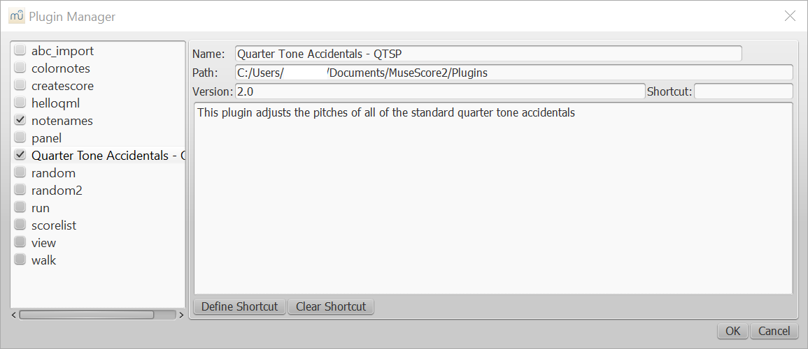

Welcome
Welcome to the installer for the Quarter Tone Accidentals plugin. Click the button below to get started.
Plugin Installation in Progress...
An installation of MuseScore has been detected on your system.
Currently downloading and installing the plugin...
MuseScore Not Found
It appears that MuseScore is not currently installed on your system.
Download Link Opened
Your browser is opening the MuseScore download page. Follow the instructions below:
- Download the appropriate version of MuseScore.
- Follow the installation prompts.
- Open the program, then close when it has loaded.
- Click the button below:
Manual Installation
This installer was unable to automatically install the Plugin. You can manually install the plugin by following the steps below:
- If the following directory does not exist: open, then close MuseScore: My Documents/MuseScoreX/Plugins/, where X is the current version number.
- Download the plugin file below and save it to My Documents/MuseScoreX/Plugins/, where X is the current version number.
Plugin Download
- Click this button below:
Installation Complete
The plugin has been successfully installed to your system.
Enable the Plugin
To enable the plugin, you will need to follow the steps below:
- If MuseScore is currently open, exit the application.
- Open MuseScore.
- Go to the top menubar, select Plugins, then Plugin Manager in the drop down menu.
- Find the entry for Quarter Tone Accidentals and make sure it is checked.
